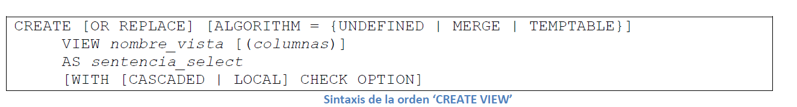
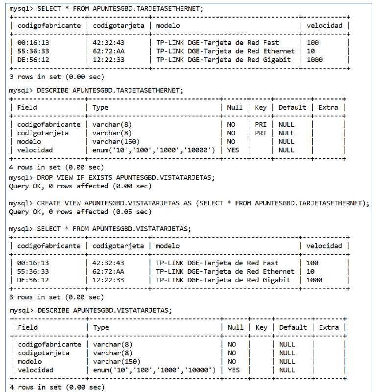
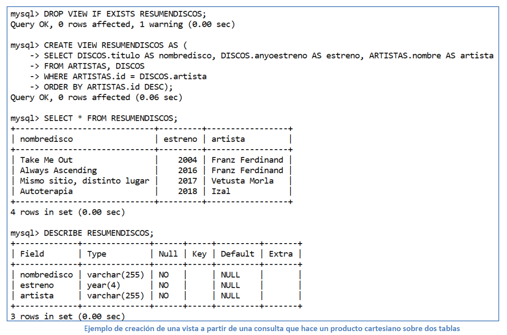
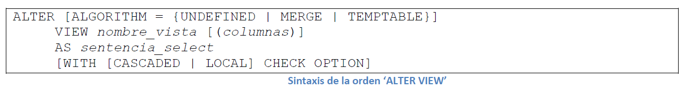
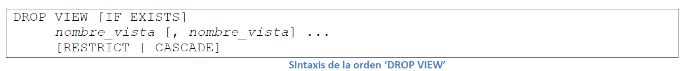
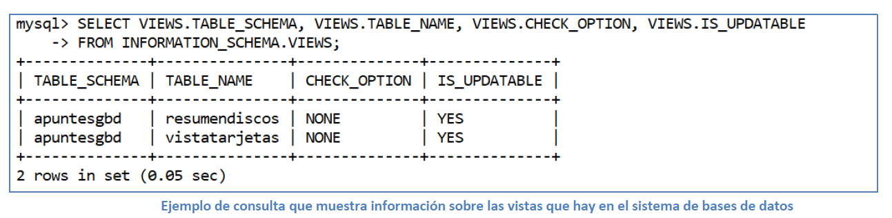

Las vistas constituyen un objeto fundamental de cualquier sistema de bases de datos y representan un elemento básico en los sistemas gestores de bases de datos basados en el modelo de arquitectura ‘ANSI/X3/SPARC’ de tres niveles, ya que se corresponden con las herramientas mediante las que el usuario externo (usuario normal, no sofisticado o no especializado) interactúa con la base de datos.
Las vistas se crean mediante la orden ‘CREATE VIEW’, cuya sintaxis se muestra a continuación:

La orden ‘CREATE VIEW’ crea una vista nueva o reemplaza una existente si se incluye la cláusula ‘OR REPLACE’.
La ‘sentencia_select’ es una expresión de consulta de selección que proporciona la definición de la vista.
Puede estar dirigida a tablas de la base o a otras vistas, es decir, una vista puede construirse a partir de tablas y a partir de vistas, lo que ofrece una potencia enorme a la hora de conseguir resultados.
Se requiere que el usuario posea el permiso ‘CREATE VIEW’ para poder definir vistas, y algún privilegio en cada columna seleccionada por la sentencia ‘SELECT’.
Para columnas incluidas en otra parte de la sentencia ‘SELECT’ el usuario debe poseer el privilegio ‘SELECT’. Si está presente la cláusula ‘OR REPLACE’, el usuario también deberá tener el privilegio ‘DELETE’ para la vista.
Toda vista pertenece a una base de datos. Por defecto, las vistas se crean en la base de datos actual, pero si se quiere crear una vista en una base de datos específica, se puede hacer indicando el nombre de la base de datos antes del nombre de la vista de la forma ‘base_de_datos.nombre_vista’, en el momento de crearla.
La siguiente imagen muestra la creación de una vista a partir de una consulta sencilla sobre una tabla:

En la imagen anterior puede observarse que en todas las órdenes se ha añadido el nombre de la base de datos antes del nombre de la tabla, lo que permite que todas las operaciones puedan ejecutarse desde cualquier base de datos.
Obsérvese que la vista creada es prácticamente igual que la tabla, la única diferencia es que la vista no tiene clave primaria.
El sistema trata igual a las tablas y a las consultas y ambas aparecerían en la lista que muestra el comando ‘SHOW TABLES’. De hecho, la vista que se ha creado en la imagen anterior no puede llamarse igual que la tabla empleada en la construcción de la misma, porque el sistema confundiría tabla y vista de la tabla (esto se debe a que las tablas y las vistas comparten el mismo espacio de nombres en la base de datos).
Las columnas devueltas por la sentencia ‘SELECT’ que se emplean en la construcción de las vistas pueden ser simples referencias a columnas de la tabla, pero también pueden ser expresiones conteniendo funciones, constantes, operadores, etc.
En la siguiente imagen se muestra la creación de una vista a partir de una consulta de selección que realiza el producto cartesiano de dos tablas y donde además se utilizan pseudónimos (alias) con los que se renombran los atributos de la consulta:

La nueva vista creada en la imagen anterior tendrá como nombres de atributos los que se han especificado en forma de alias en la consulta y que además se ha empleado el operador ‘ORDER BY’.
En el ejemplo anterior puede observarse que la vista se puede emplear como un resumen de una consulta más compleja y puede ser utilizada como parte de otra consulta incluyéndose en la cláusula ‘FROM’.
Debemos tener muy en cuenta que el contenido de una vista funciona como una consulta en tiempo real, es decir, si realizamos una nueva inserción, eliminación o actualización en la tabla original (de la cual deriva la vista) obtendremos que la tabla original se modifica y también lo hará el contenido de la vista que apunta hacia ella.
Las vistas pueden ser entendidas como una forma de guardar las consultas, en especial las consultas complejas. Si el usuario externo de la base de datos únicamente tiene permisos de ‘SELECT’ sobre esas vistas, el administrador de base de datos o el programador de aplicaciones puede programar una serie de vistas que constituirán los únicos objetos con los que el usuario podrá interactuar creando así un mecanismo de seguridad para ese usuario.
El diseño de las vistas se puede modificar mediante la orden ‘ALTER VIEW’ (disponible a partir de MySQL 5.0.1) y el usuario necesita poseer los permisos ‘CREATE VIEW’ y ‘DELETE’ para la vista, y algún privilegio en cada columna seleccionada por la sentencia ‘SELECT’. La sintaxis de ‘ALTER TABLE’ se muestra a continuación:

La orden para borrar vistas es ‘DROP VIEW’ (también introducida a partir de la versión MySQL 5.0.1) que elimina una o más vistas de la base de datos. El usuario debe poseer el privilegio ‘DROP’ en cada vista a eliminar. La cláusula ‘IF EXISTS’ se emplea para evitar que ocurra un error por intentar eliminar una vista inexistente. La sintaxis de ‘DROP VIEW’ se muestra a continuación:

Mediante el comando ‘SHOW CREATE VIEW’ (introducido en la versión MySQL 5.0.1) puede verse el diseño utilizado en la construcción de una vista. Además, en la base de datos de sistema ‘INFORMATION_SCHEMA’ existe una tabla denominada ‘VIEWS’ de la cual puede obtenerse información sobre los objetos de las vistas.
En la siguiente imagen puede verse un ejemplo de consulta que muestra información sobre las vistas que hay en un sistema:
